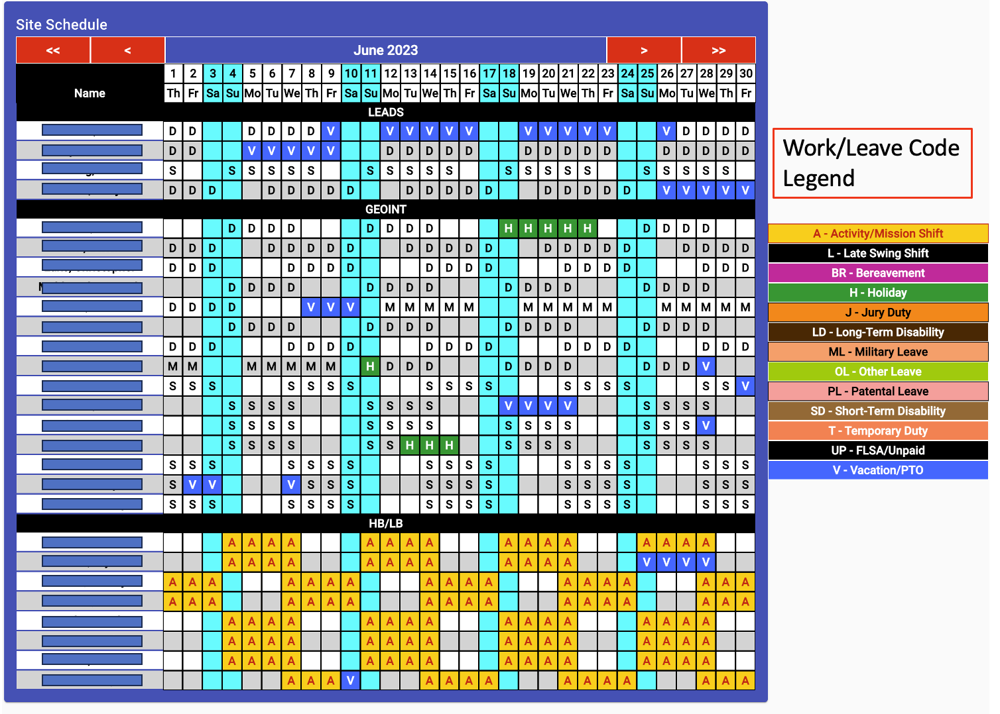

Viewing the Site Schedule

The site schedule view is made up of two portions: the schedule and
the legend. The legend portion show the various color coded schemes and
their respective meanings within the schedule. These color schemes don't
include any code where the background and text are displayed for normal
work (white background with black lettering).
-
The schedule portion provides the complete monthly schedule for the site,
by work center, then by shift within the work center. The example shown
above shows the month of June 2023, with three work centers (Leads, GEOINT,
and HB/LB).
-
Adjust the Month Shown - at the top of the schedule are four red
buttons to adjust the month shown.
-
"<<" button will move the display backward one year.
-
"<" button will move the display backward one month.
-
">" button will move the display forward one month.
-
">>" button will move the display forward one year.
Employee Leave Request
Site Shift Coverage